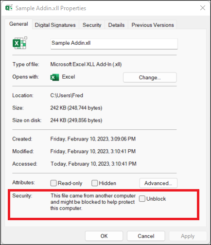
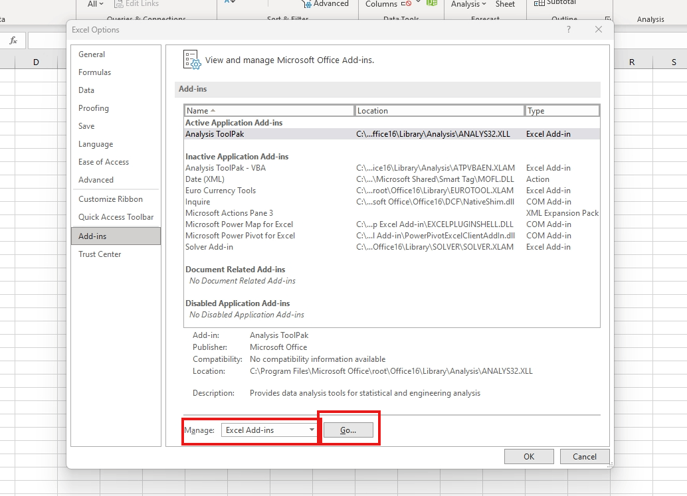
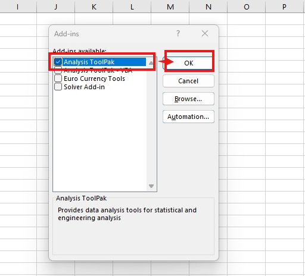

Install XLL Python
You’ll download one file and tell Excel where to find it. Python is included. When you’re done, you’ll see a Python tab at the top of your workbook.
Before you start · Open a workbook in the Windows desktop version of Excel. Choose File → Account → About Excel and look for 64-bit on the first line. This release requires 64-bit Excel on Windows.
1. Give the add-in a permanent home
Choose a folder on your PC that you can keep. For example, open Documents in File Explorer, select New → Folder, and name it Excel Add-ins. If your IT team specifies a folder, use that one.
If your browser asks where to save the file, choose your folder. If it saves automatically, open Downloads in File Explorer, select the downloaded file, press Ctrl + X, open your permanent folder and press Ctrl + V. Leave the file there so Excel can find it each time it opens.
2. Check the file’s Properties
In your permanent folder, right-click xll-python.xll and choose Properties. On the General tab, look near the bottom for Unblock.
This release is unsigned. If you trust the file from the official project release and your organisation permits it, tick Unblock for this file and choose OK.
No Unblock box? Close Properties and continue to step 3. If Windows or Excel says your organisation has blocked the file, ask IT whether they can approve this add-in.


3. Open Excel’s add-in manager
- Open a blank workbook in Microsoft Excel. Choose File at the top left, then Options at the bottom left.
- In the Excel Options window, choose Add-ins on the left.
- At the bottom, set Manage to Excel Add-ins and choose Go….

4. Select your file and check the ribbon
In the Add-ins window, choose Browse… on the right. Open the folder you chose in step 1, select xll-python.xll and choose OK or Open. Back in the add-ins list, leave the new entry ticked and choose OK.

Look along the top of your workbook for the Python tab. Select it. When you see Console and Open IDE, the add-in is ready. You can now try the forecast worksheet.

Microsoft Windows and Microsoft Excel screenshots. Used with permission from Microsoft. Excel dialog screenshots from Microsoft Community Support.